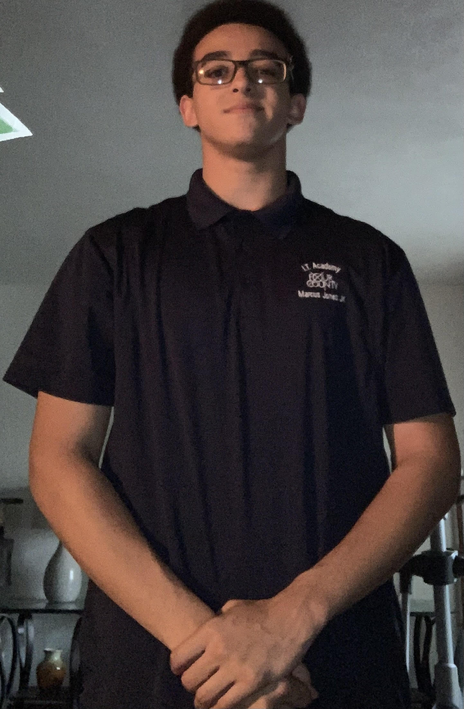
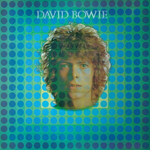
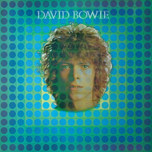

About Me
I, Marcus Jones Jr., was born in Central Michigan
on Feburary 4th of 2007.
I have lived in Michigan
for the majority of my life until my family moved down
to Northwest Ohio to live closer to my grandparents.
I enjoy spending time with my friends and
relaxing after a hard day's work.

Interest
Fitness
Videogames
and Music

 

I find fitness to be a really fun way to pass the time because it allows me to put my energy into something useful and improve my health. I have been playing videogames since I was a kid and they are really cool to me for many different reasons. I enjoy almost every kind of game from platformers to shooters to rpgs. Videogames capture my attention through competition and/or fantasy. I find it really enjoyable to climb my way up leaderboards in competitive games or be someone else for a while when playing rpgs. I enjoy many different types of music and I think that it is really effective way of expressing yourself.
Goals
- Attain a degree in computer programming
- Get a job that involves programming
- Purchase my own home/property
I plan to attain a computer programming degree from Northwest State Community College after graduating from Four County. I see programming being my career for the rest of my life. I would like to own a house because I have never lived on a piece of property that my family actually owns and I think it would be nice to have a place to stay that is truly my own.